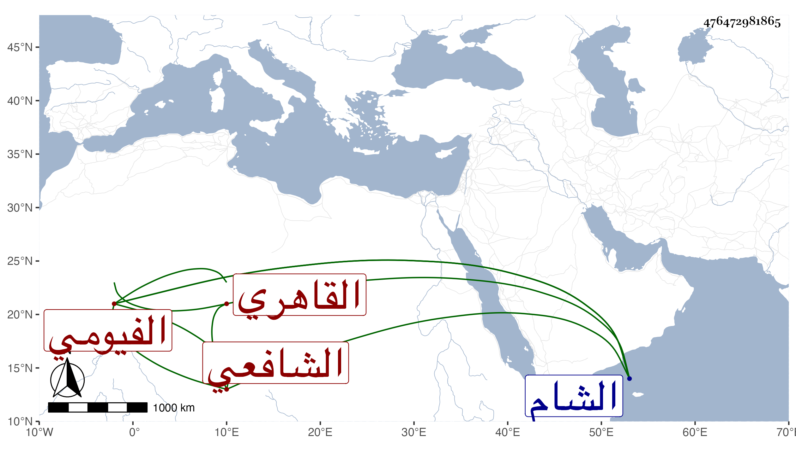

0902Sakhawi.DawLamic.ITO20230111-ara1.EIS1600.476472981865
Biography ID: 476472981865
303
عمر بن عبد العزيز بن أحمد بن محمد السراج أو النجم بن العز الفيومي الأصل القاهري الشافعي الماضي أبوه ويعرف بعمر الفيومي . ذكي فاضل أحضره أبوه على شيخنا في رمضان سنة إحدى وخمسين وهو في الثالثة بعض المحامليات الأصبهانية بل وحضر في التي قبلها عليه في المجالسة وكذا سمع بعد ذلك على جماعة منهم النسائي الكبير على السيد النسابة والأبودري والمجد إمام الصرغتمشية والزفتاوي واشتغل وتميز ونظم ونثر وتردد إلي يسيرا ولكنه لم يتصون بل عرف بالسفه والفجور والإقدام ثم نصب نفسه وكيلا في الخصومات إلى أن منعه السلطان في سنة تسع وثمانين بعد ضربه المبرح وأكد عليه في المنع كما أكده على عمه شريف فمكث ثم عاد فأعيد الضرب المبرح بالمقارع في أثناء سنة خمس وتسعين حتى كاد أن يموت وأمر نفيه فأخرج على أسوأ حال فتوسل أبوه بكل من الأتابك وأمير سلاح فشفعا فيه فرسم بعوده فما عاد ، وتوجه إلى الشام فمدح صدقة سامري هناك بقصيد يقال أنه بالغ فيه مبالغة تقتضي أمرا عظيما والأمر وراء هذا ، ولم يلبث أن مات في رمضان ظنا سنة ست وتسعين ، وهو ممن قرض مجموع البدري بأبيات أولها :
| يا فريدا فاضت معانيه نهرا | وأذاق الأعداء زجرا ونهرا |
| أشهر الله فضلك الجم في النا | س فزنت الزمان عاما وشهرا |
